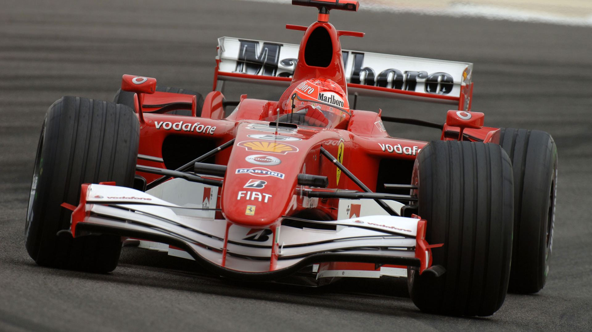

Aufzeichnungen

- Constructor Meisterschaften gewinnen Prozentsatz: 29,1%
- Fahrermeisterschaft gewinnen Prozentsatz: 23,8%
- Gewinn Prozentsatz: 25,7%
- Das Ferrari-Team hat einen beispiellosen Erfolg in der Formel Eins erreicht und hält viele wichtige Aufzeichnungen einschließlich:
- Die meisten Konstruktor Meisterschaften: 16
- Die meisten Fahrer Meisterschaften: 15
- Die meisten Grand Prix teilgenommen (all-time): 871
- Die meisten Grand Prix gestartet (all-time): 869 [7]
- Die meisten Siege (all-time): 221 [8]
- Die meisten Siege (Saison): 15 (gemeinsam mit McLaren) / von Mercedes im Jahr 2014 beated
- Die meisten Podestplätze (all-time): 677
- Die meisten Podestplätze (Saison): 29
- Die meisten Doppelsiege (all-time): 81
- Die meisten Doppelsiege mit den gleichen Treiber (Michael Schumacher - Rubens Barrichello): 24
- Die meisten Pole Positions (all-time): 207
- Die meisten ÖRK-Punkten (all-time): 5,618.5
- Die meisten WDC Punkte (all-time): 6,520.27
- Die meisten schnellsten Rennrunden (all-time): 229
- Die meisten aufeinander folgenden Spielzeiten mit mindestens einem Sieg in die Saison: 20
- Ferrari ist auch der erfolgreichste Formel 1 Motorenhersteller mit 222 Siegen.